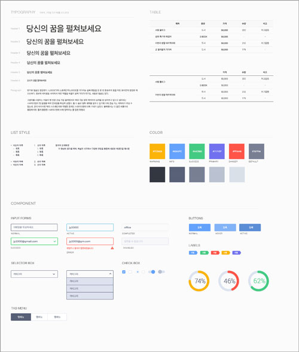
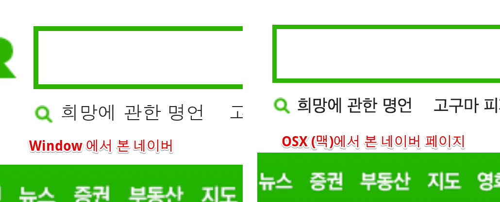
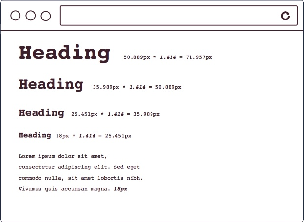
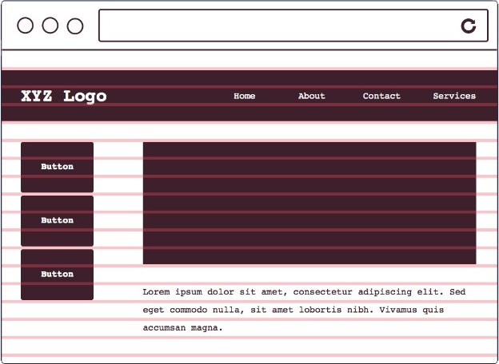
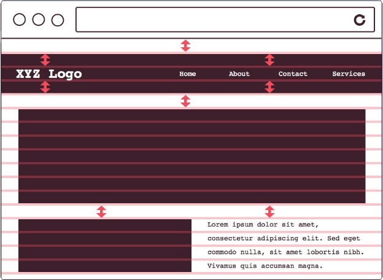
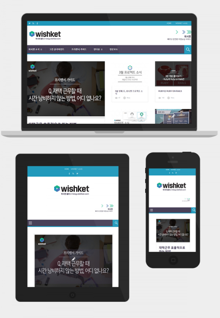

1. Text
line-height: 1.5em, font-size: 16px, font-weight: 500
HERFER LINK TEXT텍스트 더미
텍스트 더미line-height: 1.5em, font-size: 16px, font-weight: 500
HERFER LINK TEXT텍스트 더미
텍스트 더미버전관리도구 github.com에 가입
디자이너, 개발자, 콘텐츠 개발자 간의 소통을 위한 도구로서 글자 사이의 간격, 행 사이의 간격, 많이 쓰는 색상 값 등을 한데 묶어 전체적인 디자인 설계를 보여주는 것이다.
h1 ~ h6 까지 총 6단계의 제목 사용
의미는 가지지 않으나, 여러 요소를 블록(Block)으로 묶을 때 사용
OS(운영체제) 별로 보여지는 폰트는 제각기다, 그 예로 다음의 사진을 보겠다.

다음과 같은 차이가 나는 이유는 OS별로 지원하는 기본 폰트 (System default font)가 다르기 때문이다.
따라서 OS에 관계 없이 똑같이 보여지게 하려면, 시스템의 폰트를 참조하는 것이 아닌 만들어서 웹상에 뿌려진 형태의 웹 폰트를 써야한다. 웹 폰트는 Css, 직접 ttf 파일을 내려받아 사용하는 2가지의 방식이 있다.
일정한 배율이 반영된 수의 나열
행(ROW) 사이 간격으로 글자 크기(Font Size)를 포함한 높이
각 요소(Element) 간의 수직적인 공간 배열 관계
요소에 height와 width를 줬을 시 content 영역만 별개로 늘어난다.
하지만 box-sizing: border-box 를 줬을 시 border까지의 영역을 content로 잡아주기 때문에 보다 쉽고 유용하게 마크업이 가능하다.
div 와 같은 block 태그들은 기본 width 값이 100% 이기 때문에 수직 방향으로 떨어진다.
이러한 block 태그들을 수평방향으로 배치하기 위해 float 라는 기술을 쓴다.
li에 list-style: none을 준뒤
ul을 padding-left으로 밀어서
다시 li에 list-style-image: url(""), list-style-positon: x y 로 조정
결과 페이지 : list-design
위 공식을 이용해서 .push-1 과 같은 모듈을 만들어내고,
전체적인 row를 미는것은 해당 row에다 position: relative 를 준다음 밀어냄 .prefix 모듈
해당 요소 조상의 position이 있는 곳을 기준으로 잡고 다른 엘리먼트에 영향을 미치지 않고 이동할수 있게된다.
자식에게 position을 줬을떄 사용되며, 원래 자신이 위치하고 있었던 곳을 기준으로 다른 엘리먼트에 영향을 미치지 않고 이동가능
본래 우리나라에선 팝업창이라 부르는 홈페이지와 개별적으로 띄어지는 창은
본래 bim-window 라는 정식 명칭이 있었다.
position: fixed 라는 포지셔닝은 이름 그대로 해당 영역에 고정 시킨다. (스크롤해도 위치가 그대로임)
위 position: fixed 와 Day11에 배웠던 내용을 이용해 브라우져 정 가운데 위치한 개별적인 창을 고정(fixed) 시켜 보겠다.
스마트폰이 만들어졌다, 무려 인터넷도 된다. 자연스럽게 웹의 영역은 모바일 까지 확장 되었고 모바일에서도 데스크탑과 마찬가지로 똑같은 화면을 보여줄수 없기 때문에, 웹은 모바일 까지 지원하는게 필수가 되었다.
하지만 불행하게도 모바일마다 배율(픽셀 밀도) 가 다르다.
이 말은 Galaxy에서 잘 보이던 이미지가 iPhone에서는 깨져보일수도 있다는 뜻이다.
앞서 말하지만 픽셀은 상대적이다.
위 사진으로 예를 들어, 검은색 사각형 하나를 절대적인 값의 1px이라고 한다면
1배율에서 1px => 2배율에서 2px이 된다.
쉽게 설명하자면 1배율에서 2칸에 들어갈 픽셀이 2배율에선 1칸에 들어간다는 것이다.
고로 1배율에서 잘보이던 사진이 2배율에서 깨져보이는 이유는 상대적으로 크기는 똑같아 보이지만 2배율에서의 사진은 1배율에서의 사진을 2배 늘린것이기 때문이다.
이미지를 원래 크기보다 늘리면 당연히 깨진다... 하지만 역설적으로 원래 큰 이미지를 줄이면은 그 해상도는 그대로 유지하며 거의 안깨지게 할수 있다.
즉 고해상도 까지 이미지를 깨지지 않게 지원하려면 그냥 말 그대로 처음부터 크게 제작하면 된다.
만약 여러분의 회사가 모바일 기기를 3배율 까지 지원한다고 하고, 여러분이 만들 이미지 사이즈가 ( 500 x 200 ) 이라면 여러분은 그냥 원래 사이즈의 3배 즉 ( 1500 x 600 ) 사이즈의 이미지를 만들기만 하면 된다. 각각 비율에 맞는 사이즈는 퍼블리셔들이 알아서 줄여줄 것이다. ( 주의할 점 : Smart Object 로 만들어야 줄였을때의 깨짐현상을 최소화 시킬수 있다. )
위 이미지를 포토샵에서 줄인다음 빼내서 각각의 배율마다 해당 이미지를 처리해야 하는데
다행히도 이를위해 html5에서는 새로운 태그가 있다. 바로 src set이다.
코드 작성도 매위 손쉽다 기존의 img 태그 뒤에서 srcset="" 만 붙여주면 된다.
slider 같은 경우, 보여지는 부분인 wrap 엘리먼트를 만든 뒤,
보여지는 박스 부분이 움직이도록 실질적으로 해당 엘리먼트들을 감싸는 박스 만듦
첫부분 col의 왼쪽, 마지막 col의 오른쪽, 총 2개의 gutter를 뺸 값으로 계산
( 이렇게 하면 gradient로 만들기 편함 )
평소엔 container에 고정 width 값을 줬다가
container에 flud 등의 class 값을 추가로 줬을 시 px로 고정시킨 width 값을 100%로 바꿔준다.
데스크탑의 폭과 모바일의 폭은 당연히 다를수밖에 없다.
혹은 데스크탑의 그 큰 사이즈를 모바일에서 본다면 글시조차도 제대로 못볼 것이다.
모바일에서의 폭(가로)을 가져와서 그 사이즈에 맞도록 보여질수 있도록 하는 코드가 바로 viewport며 사용법은 다음과 같다.
viewport를 브라우져의 폭(가로)을 그에맞게 보여질수 있도록 최적화 시켰으니 다음은 device마다 다른 화면을 보여줄 차례다.
위 사진과 같이 보여지게 하려면 mediea 쿼리가 필요하며, 미디어 쿼리 사용법은 다음과 같다.
그리스 시스템은 기본적으로 column을 정하고 시작한다.
( 데스크탑은 12column, 테블릿은 8column, 모바일은 4column 으로 적용시키는 것이 기본이다.)